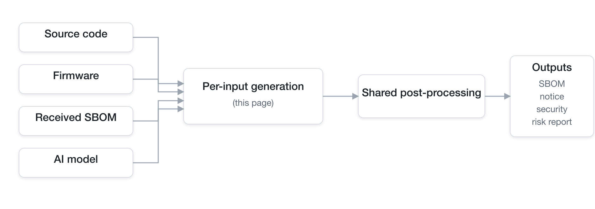
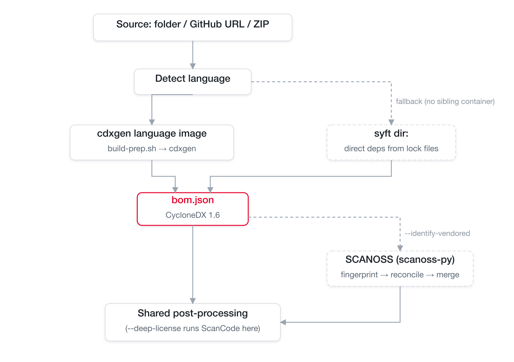
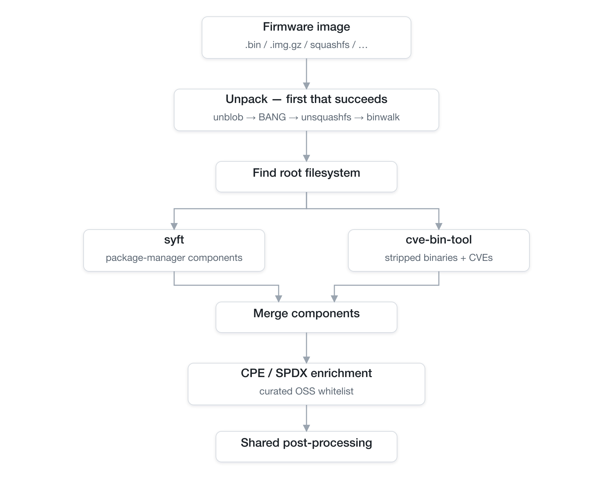
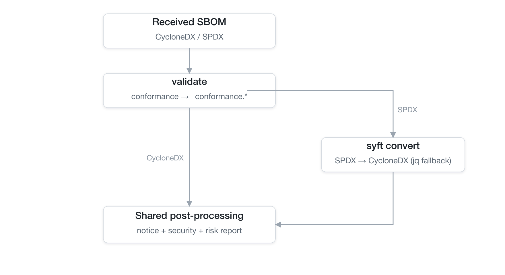
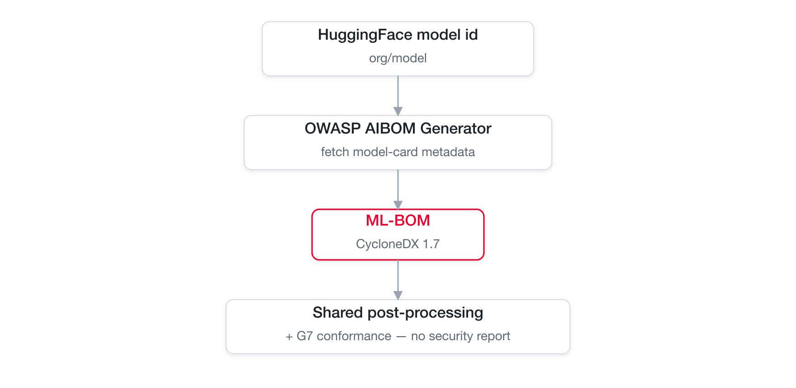
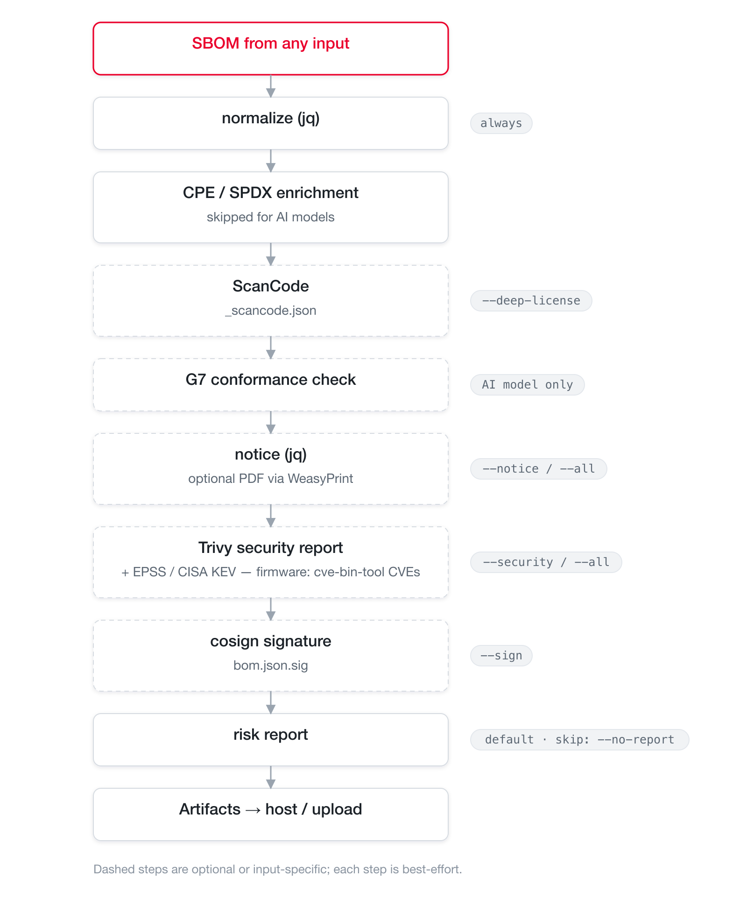

Pipeline by input type¶
BomLens accepts several kinds of input — source code, firmware, an SBOM you received, and an AI model. Each has its own generation step that builds a CycloneDX SBOM, and then they all converge on one shared post-processing pipeline (notice, security, risk report). This page walks the tool flow for each input. For the high-level two-stage view, see Architecture.

Every external tool below is open source; the table in Open-source tools used lists each one's role, license, and project link.
Source code¶
A source folder, a GitHub URL, or a ZIP archive. Language detection picks the matching official cdxgen language image, which prepares dependencies (build-prep.sh) and generates the SBOM. When BomLens cannot run a sibling container (for example the web UI's source scan), it falls back to syft over the directory, which captures direct dependencies from lock files.
Two options apply to source scans only, and both are off by default.
- Identify vendored OSS (
--identify-vendored, SCANOSS) — for C/C++ and other code copied in without a package manager. The SCANOSS client fingerprints files and queries the hosted OSSKB service, then BomLens reconciles the matches against what the package-manager scan already found and merges the rest into the SBOM. - Deep license detection (
--deep-license, ScanCode Toolkit) — scans first-party source for license headers. It runs during post-processing and writes a separate_scancode.json.

Container images, single binaries, and directories (root filesystems) skip cdxgen and are scanned directly by syft, then follow the same post-processing.
Firmware¶
A network-device firmware image (.bin, .img.gz, squashfs, and more), handled by the opt-in bomlens-firmware image. Firmware packs an OS and dozens of libraries into one sealed file, so BomLens first unpacks it, then identifies components in two ways: package-manager metadata with syft, and stripped static binaries with cve-bin-tool (which also matches CVEs). The two results merge, and a CPE/SPDX enrichment step fills identifiers for a curated list of well-known OSS (busybox, dropbear, dnsmasq, …) so Trivy and the notice can use them.
Unpacking tries tools in order, using the first that succeeds: unblob (primary), unsquashfs for standard squashfs, 7z for the container formats Windows deliveries arrive in, then binwalk.

The firmware tools are GPL-family, so they live only in the
bomlens-firmwareimage and the base image installs none of them. See the firmware guide and its limits.
Received SBOM¶
An SBOM (CycloneDX or SPDX) received from a supplier or another team — no source code needed. BomLens first checks it against the quality criteria and writes a conformance report, then normalizes the input to CycloneDX so the rest of the pipeline can analyze it. SPDX is converted with syft convert (a jq fallback handles SPDX JSON if syft is unavailable). Notice, security, and the risk report are always produced in this mode.

Validation is based on the original input before conversion, so SPDX is checked as SPDX. Details are in the supplier SBOM guide.
A Yocto build directory enters here too. Pointing --target at one is recognized, and the image SBOM the build published under tmp/deploy/images/ takes this same path — read by a dedicated parser that keeps the installed package set and the vulnerability verdicts the build recorded, rather than by the generic SPDX conversion.
AI model¶
A HuggingFace model id (org/model), handled by the opt-in bomlens-aibom image. The OWASP AIBOM Generator fetches the model-card metadata over the network and builds a CycloneDX 1.7 ML-BOM centered on the model and its datasets. Post-processing then adds a G7 minimum-element conformance check. Because an AI model has no package CVEs, the security report is skipped.

There is a second AI input that runs entirely in the base image: a model file (--model-file, or a model upload in the web UI). No generator and no network are involved — a stdlib reader parses the file's own header, decides the format from its magic bytes rather than its name, hashes the file, and writes the same CycloneDX 1.7 ML-BOM shape, which then takes the identical post-processing. It is the path for weights a supplier sent you and for models that were never published. What it can fill depends on the format: GGUF declares a name, a license and an architecture, safetensors usually declares only tensor shapes, and a file that declares neither still contributes its integrity hash.
A third AI input runs in the base image too: a published research dataset, given as a Figshare item (--model with the item URL, its DOI, or the item number). The public item endpoint answers without an account, and the fields an SBOM wants — licence, DOI, authors, a digest per file — are fields there rather than prose in a card, so a stdlib reader transcribes them into a CycloneDX 1.7 data component that takes the same post-processing. It is the path for data a paper published, which is where a great deal of research data actually lives. A licence the item states as one we can place becomes an SPDX id; anything else is kept verbatim rather than guessed at, and an item nobody can read without an account is an error rather than a dataset described as having no licence.
The model card's disclosure (weights, architecture, training data, training process) and the G7 result appear in the web UI's Models & datasets and G7 sections — see the web UI reference. For a step-by-step walkthrough, see the AI model guide.
Shared post-processing¶
Whatever the input, the SBOM flows through the same ordered steps. Normalization runs first to stabilize the input for every later step; signing runs last so it covers the final SBOM. Dashed steps are optional or input-specific. Each step is best-effort — a failure is skipped with a warning rather than aborting the scan (signing and upload excepted).

The risk report is generated by default in every mode (it aggregates licenses and vulnerabilities); skip it with --no-report. For the step-by-step flag mapping, see Architecture.
Open-source tools used¶
Every analysis tool is open source. The tools installed into the base image are permissively licensed; the GPL ones are isolated in the opt-in bomlens-firmware image, and the AI generator in bomlens-aibom. Every image also carries the GPL system packages of its Debian base, as any Linux image does — see Third-party licenses.
| Tool | Role | Input | License | Image | Project |
|---|---|---|---|---|---|
| cdxgen | Generate the SBOM from source | source | Apache-2.0 | language images | CycloneDX/cdxgen |
| syft | SBOM for images, binaries, directories, firmware rootfs | source (fallback), image, binary, rootfs, firmware | Apache-2.0 | base / firmware | anchore/syft |
| SCANOSS (scanoss.py) | Identify vendored OSS via file fingerprints | source (--identify-vendored) |
MIT | base | scanoss/scanoss.py |
| ScanCode Toolkit | Deep first-party license detection | source (--deep-license) |
Apache-2.0 | base (opt-in) | aboutcode-org/scancode-toolkit |
| unblob | Firmware unpacking (primary) | firmware | MIT | firmware | onekey-sec/unblob |
| sasquatch | Vendor squashfs variants standard unsquashfs refuses | firmware | GPL-2.0 | firmware (opt) | onekey-sec/sasquatch |
| cve-bin-tool | Stripped-binary identification + CVE matching | firmware | GPL-3.0 | firmware | intel/cve-bin-tool |
| OWASP AIBOM Generator | ML-BOM from a HuggingFace model card | AI model | Apache-2.0 | aibom | GenAI-Security-Project/aibom-generator |
| Trivy | Vulnerability (CVE) security report | all | Apache-2.0 | base | aquasecurity/trivy |
| cosign | Detached SBOM signature | all (--sign) |
Apache-2.0 | base | sigstore/cosign |
| WeasyPrint | Optional PDF rendering of the notice | all (SBOM_PDF build) |
BSD-3-Clause | base (opt-in) | Kozea/WeasyPrint |
| jq | SBOM normalization, notice, report assembly | all | MIT | base | jqlang/jq |
For the full license inventory and the GPL source-offer for the firmware image, see THIRD_PARTY_LICENSES.md.
Related: Architecture | Firmware guide | Supplier SBOM guide | Identify bundled OSS